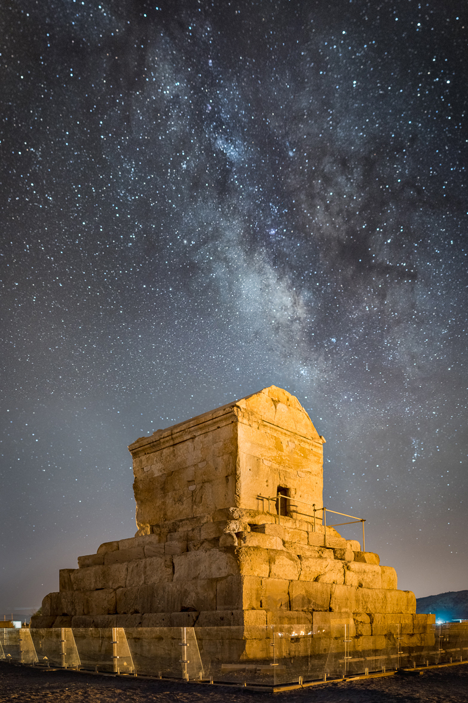

Pasargadae and the Tomb of Cyrus

- Find Name
- Pasargadae and the Tomb of Cyrus
- Description
- The first capital of the Achaemenid Persian Empire, founded by Cyrus the Great in the 6th century BC on the Morghab plain in southern Iran. Its excavated remains include audience halls, palaces, pavilions, and formal gardens, and, about a kilometre from the palaces, a small stepped limestone tomb with a gabled chamber, standing about 11 metres tall. Classical writers (Arrian, following Aristobulus, and Strabo) describe Cyrus's tomb at Pasargadae in matching terms, and the structure was long called the Tomb of the Mother of Solomon before James Morier reattributed it to Cyrus in 1812. No inscription naming Cyrus survives on the tomb, and some scholars note the attribution rests on the classical accounts rather than on an inscription found in place.
- Historical Period
- Achaemenid Persian, 6th century BC
- Evidence Class
- Disputed
- Interpretations
- DOUBT STATED: Pasargadae itself is securely Cyrus's capital, but the tomb's identification as Cyrus's own burial place is traditional, resting on classical descriptions and on Morier's 1812 reattribution, not on a surviving inscription; the tomb was also attributed for centuries to the Mother of Solomon. The entry is therefore borderline, not clear: the capital is certain, the tomb attribution is not proven.
- Alternative Names
- Tomb of Cyrus; Tomb of the Mother of Solomon (former attribution)
- Related Books
- Related Events
- Related People
- Scripture Illuminated
- Biblical Significance
- Cyrus is the king Isaiah named before his birth and Ezra credits with the decree that sent the exiles home. Pasargadae is the capital he built, and the tomb in its park is the monument classical writers describe as his — but the tomb's own inscription is lost, so this entry claims the tradition and the archaeology, not a proven burial.
- Artifact Date
- c. 540-530 BC
- Current Location
- In situ, Pasargadae, Fars Province, Iran (UNESCO World Heritage Site)
- Date Discovered
- Identified as Cyrus's capital by Ernst Herzfeld, 1908 (site known to travellers earlier)
- Discovery Location
- Pasargadae, Fars Province, Iran
- Timeline Era
- Return and Second Temple
Awaiting Review Not yet checked against scholarly sources. Treat its claims as provisional until this entry is reviewed. About verification
Last reviewed: not yet reviewed